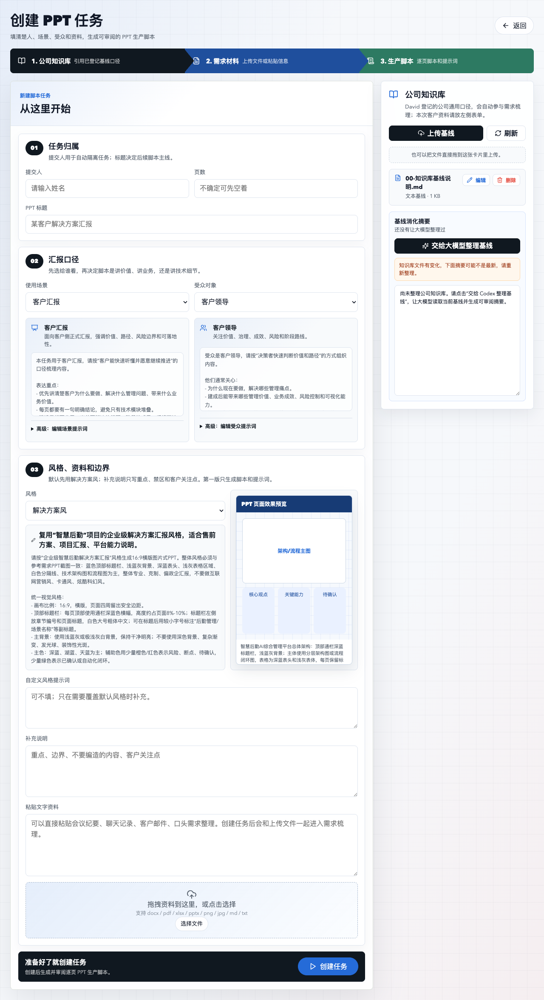
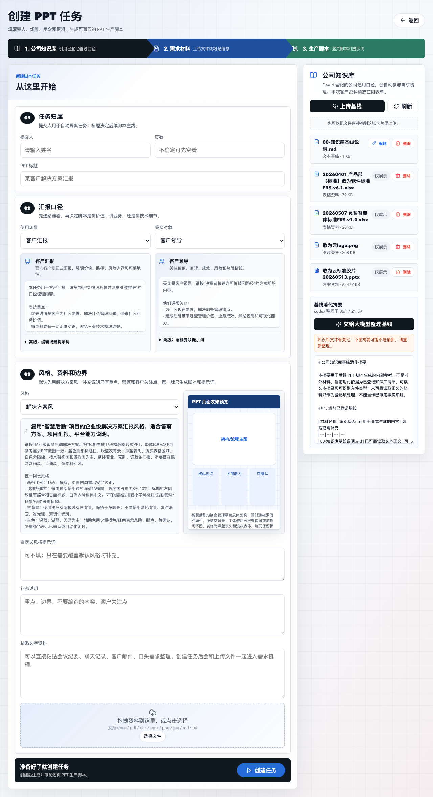

先把客户事实写清楚
接口开放情况、已有系统状态、点位数量、金额、上线时间、责任部门，没有材料依据就标记为“待客户确认”。
给售前、解决方案、产品和交付同事看的上手教程：让 Codex 从 GitHub 安装插件，然后把客户材料变成可审阅的逐页 PPT 脚本与图片生产提示词。
A practical guide for presales, solution, product, and delivery teams: let Codex install the plugin from GitHub, then turn customer materials into reviewable page-level PPT scripts and image-production prompts.
它不是“一键出最终 PPT”的黑盒，而是把解决方案生产过程标准化，让大家先把事实、需求、能力边界和每页怎么讲整理清楚。
It is not a one-click final PPT generator. It standardizes the solution-production process so the team can clarify facts, requirements, capability boundaries, and page-level narration first.
不要让同事自己下载、解压和执行一堆命令。把安装动作交给 Codex。
复制给 Codex请给我的 Codex 安装以下地址的插件：https://github.com/Daviddwt/solution-factory
请自行读取注意事项、下载最新分享包、安装插件、打开网页工作台并完成验证。
Do not ask colleagues to download, unzip, and run multiple commands manually. Let Codex handle the installation.
Copy to CodexPlease install the Codex plugin from this URL: https://github.com/Daviddwt/solution-factory
Read the notes, download the latest release package, install the plugin, open the web workbench, and verify it works.

接口开放情况、已有系统状态、点位数量、金额、上线时间、责任部门，没有材料依据就标记为“待客户确认”。
参考 PPTX、PDF、截图、客户品牌模板都可以。补充说明里写清楚要保持标题栏、配色、表格、页脚和架构图风格一致。
不是现有能力就写成 integration、custom_dev 或 unclear，不要包装成默认产品能力。
脚本是源头，图片 PPT 是渲染层。先确认需求包和逐页脚本，再交给 NotebookLM / 图片 PPT 智能体。
Interface availability, existing systems, site counts, amounts, timeline, and owners must be evidence-backed or marked as to be confirmed.
Reference PPTX, PDF, screenshots, brand templates, or approved decks help preserve title bars, colors, tables, footers, and architecture-diagram style.
If it is not an existing capability, label it as integration, custom_dev, or unclear.
The script is the source of truth. Confirm the requirement pack and page scripts before sending prompts to NotebookLM or an image PPT agent.
复制给 CodexSolution Factory 网页打不开，请帮我检查插件是否安装、服务是否启动、端口是否占用，并重新打开网页工作台。
公司服务器地址属于内部信息。公开 GitHub 文档只写“请看内部公告”，不写具体内网 IP。
当前工具负责生成可审阅的 PPT 脚本和逐页图片提示词。最终图片 PPT、可编辑 PPTX 需要走后续独立流程。
重要信息建议同时粘贴文字版，或者补充一份可读取的 Word / Markdown / 文本摘要。
Copy to CodexSolution Factory does not open. Please check whether the plugin is installed, whether the service is running, whether the port is occupied, and reopen the web workbench.
The company server URL is internal information. Public GitHub documentation should point users to internal announcements instead of exposing an internal IP.
This workbench produces reviewable PPT scripts and image prompts. Final image PPT and editable PPTX files belong to downstream workflows.
Paste key information as text, or provide a readable Word / Markdown / text summary.
| 场景 | 结果 |
|---|---|
| 本机个人插件网页工作台 | 通过 |
| 同事分享包模拟安装网页工作台 | 通过 |
| 公司服务器网页工作台 | 通过 |

| Scenario | Result |
|---|---|
| Personal local plugin web workbench | Passed |
| Colleague share-package installation simulation | Passed |
| Company server web workbench | Passed |